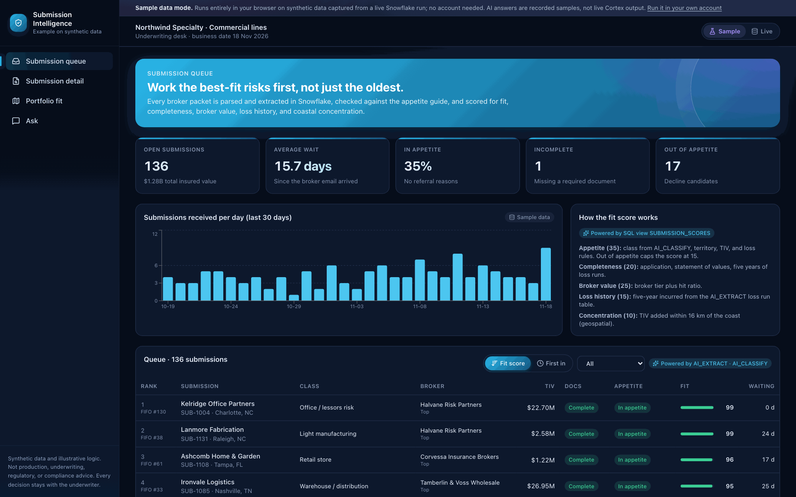
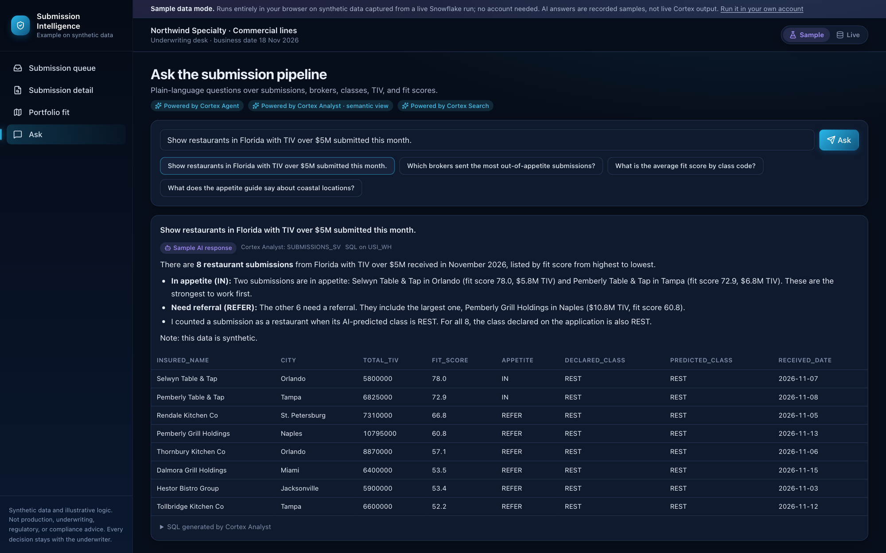

Clear the submission backlog by working the best-fit risks first
Commercial underwriters receive far more broker submissions than they can quote. Each one arrives as a packet of PDFs and an email, and most queues are worked first in, first out. That means a clean, in-appetite risk from a top broker can wait behind incomplete or out-of-appetite ones. This example reads every packet in Snowflake, extracts the fields and loss runs, checks them against the appetite guide, measures coastal concentration against the existing book, and ranks the queue by fit. The underwriter still makes every decision.
Synthetic data, illustrative logic. Every insured, broker, carrier, and person is fictional, and the forms are synthetic layouts. This is not underwriting, regulatory, or compliance advice, and it isn't a production system. Scores and drafts are suggestions for an underwriter to review.
Who it's for
Commercial underwriters
A queue ranked by fit, each submission's fields already extracted with the source highlighted, and a memo draft to edit.
Underwriting managers
See what's waiting, what's incomplete, and what's out of appetite, and ask questions about the pipeline in plain language.
Portfolio and cat management
See how a new schedule of locations adds to coastal concentration before it's quoted.
Walkthrough
Screenshots of the running app on its synthetic data set: 150 broker submissions to the fictional Northwind Specialty, 136 of them still open on the business date.




How it works
Each capability below ran in live mode in a Snowflake account in November 2026.
| Step | Snowflake capability | What it does here |
|---|---|---|
| Ingest | Git repository clone, stage with directory table | Loads the synthetic PDFs and CSVs from the public repository. No upload step. |
| Read documents | AI_PARSE_DOCUMENT | Full text of every application. |
| Extract fields | AI_EXTRACT with citations | Thirteen application fields, each with the page box where it was found. Table extraction reads the five-year loss runs. |
| Find the class | AI_CLASSIFY | Assigns the governing class code from the operations description, so a hazardous activity can't hide behind the declared class. |
| Appetite and fit | SQL view | Class, territory, TIV, loss, and completeness rules, plus the five-part fit score. |
| Concentration | Geospatial functions and H3 | Distance to coast, existing portfolio TIV within 25 km, and exposure by H3 cell. |
| Appetite guide | Cortex Search | Finds the guide passages that apply to each submission. |
| Memo and broker email | AI_COMPLETE | Drafts from the extracted facts and guide passages. Drafts are saved for review. |
| Ask | Cortex Agents, Cortex Analyst, semantic view | Turns questions about the pipeline into SQL and answers them. |
On this synthetic data set, AI_EXTRACT matched the generator's values for all 150 insured names and total insured values, and for all 745 loss-run rows. Real broker documents are messier; measure accuracy on your own keyed sample before relying on it.
Get started
No account
Open the hosted example, or run it locally with Node.js 20.19 or later:
git clone https://github.com/sfc-gh-ooral/sfguide-underwriting-submission-intelligence.git
cd sfguide-underwriting-submission-intelligence
npm install
npm run devAI answers in this mode were recorded from a live run and are labeled Sample AI response.
Your Snowflake account
- Run
sql/setup.sqlin a Snowsight worksheet. It creates a dedicated database, an XSMALL warehouse, and a least-privilege role, loads the synthetic files from the repository, and runs the document AI. - Register a key pair for your user and copy
.env.exampleto.env.local. - Run
npm run dev. Each screen shows the live role and measured latency. - When you're done, run
sql/cleanup.sql.
The README lists every object created, the expected cost, and the full steps.
Customize with Cortex Code
- "Load my appetite guide and turn it into rules plus a searchable index. Show me ambiguous rules."
- "Extract 30 of my sample submissions and measure field accuracy against my keyed data."
- "Weight the fit score toward my target classes and explain each component."
Limits and disclaimer
- The fit score and appetite rules are illustrative weights, not a pricing or rating model.
- The documents are clean, one-page synthetic layouts. Scanned or handwritten submissions need more review.
- The coastline is a simplified line of 39 points, and the "map" is a plain longitude/latitude plot with no base map.
- Results such as "ranks first" and "8 restaurants" are planted stories on this synthetic data set.
This is an illustrative example provided as is. It is not an official Snowflake product, it isn't supported by Snowflake Support, and it contains no customer data. Apache 2.0 license.